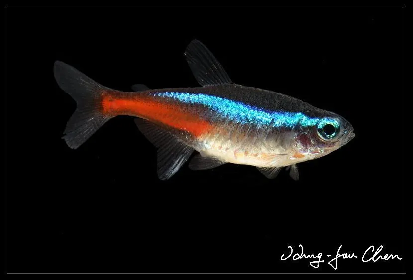

鱼类 · 动物界
红绿灯鱼 Paracheirodon innesi

亚马逊流域的小型脂鲤，体侧有亮蓝色霓虹纵带和红色尾柄，色彩鲜明，是最著名的淡水观赏鱼之一。
- 分类
- 门脊索动物门纲辐鳍鱼纲目脂鲤目科脂鲤科属霓虹脂鲤属
- 栖息环境
- 亚马逊河流域水流缓慢、水草茂密、水质偏酸的黑水支流
- 地理分布
- 南美洲亚马逊河流域上游，主要产于巴西和秘鲁
- 保护级别
- 暂无评估；中国未列入国家重点保护野生动物名录
物种志
红绿灯鱼体形细长，侧扁，成鱼体长一般 3–4 cm。体色背部暗绿，体侧中央有一条从眼睛延伸到尾柄的亮蓝色霓虹纵带，尾柄和臀鳍附近呈鲜红色，腹部银白。光线照射时，蓝色纵带会反射出金属光泽。
红绿灯鱼分布于南美洲亚马逊河流域，主要在上游的支流和黑水河，喜欢水流缓慢、水草茂密、水质偏酸的环境。它性情温和，常成群活动，吃小型甲壳类、昆虫幼虫和藻类。红绿灯鱼是世界上最著名的淡水观赏鱼之一，20 世纪 30 年代被引入欧洲后迅速流行。目前市场上的个体多来自人工繁殖，野生捕捞也仍在进行。由于分布广，目前尚无明确的 IUCN 评估。
形态与习性
- 食性小型甲壳类、昆虫幼虫和藻类
- 体长一般 3–4 cm
- 体色亮蓝色霓虹纵带，尾柄鲜红色
- 性情温和，适合群养
- 水质偏好偏酸、软水，水温 22–26 ℃
- 观赏价值世界最著名的淡水观赏鱼之一
趣味知识
- 红绿灯鱼体侧的蓝色纵带在光线下会反射出霓虹般的光泽。
- 它体长只有 3–4 cm，是最受欢迎的入门观赏鱼之一。
- 红绿灯鱼喜欢偏酸的黑水环境，这与亚马逊河的水质特点相符。